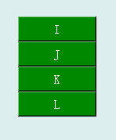
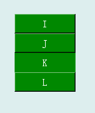

垂直按钮组控件就是纵向排列在一起的按钮控件，可用于接收用户的鼠标点击输入，然后通过回调函数形式编程定义其具体功能和操作，按钮组中相邻按钮的返回值差值为1。垂直按钮的图形显示效果如下：

在Python程序GUI界面中创建一个垂直按钮组控件的命令为:
hl=dr.DRVButtonGroupX(win,x,y,w,h,bg,fg,'t1,t2,...,tN',N,fontsize,ID)
其中hl是创建时用户设定的变量名。垂直按钮组控件可以通过回调函数绑定的方式将用户的鼠标点击操作传递给绑定的回调函数，格式为：
hl.addCallBackSingle(setValueSingle)
被绑定的回调函数是一个单数值函数，收到的是所点击按钮的ID值，其函数形式为：
def setValueSingle(v):
通过回调函数绑定方式，就可以将用户的鼠标点击操作传递到程序的回调函数中。
垂直按钮组控件也是从Tkinter的Button控件继承而来，因此必要时也可以通过Tkinter_Button控件的属性和方法来对其进行装饰。例如，下面语句将已创建的垂直按钮组控件第2个按钮的边框设为平面。
hl.ax[2].config(relief='flat')
显示效果为：
对于Tkinter_Button控件，可以通过configure函数配置的外形参数主要有：
text='标签'
bg='#背景颜色码'
fg='#文本颜色码'
activebackground='#active时的背景颜色码'
activeforeground='#active的文字颜色码'
relief='边框的3D样式名'(flat、sunken、raised、groove、ridge、solid)
bd=边框宽度点数
font=('字体名',字体点数)
更多有关Tkinter_Button控件的详细用法请参阅Tkinter文献。
.